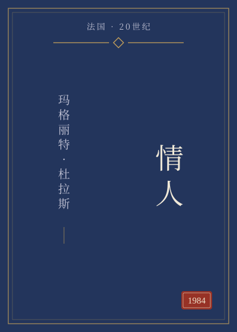
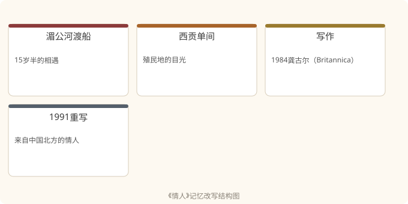

情人
一、基本信息
| 作者 | 玛格丽特·杜拉斯 |
|---|---|
| 成书/出版 | 1984年出版并获龚古尔奖（Britannica：L'Amant (1984; The Lover; film, 1992) won the prestigious Prix Goncourt in 1984） Marguerite Duras — Encyclopaedia Britannica（百科全书） |
| 国别/地区 | 法国 |
| 时代 | 现当代 · 20世纪 |
| 体裁 | 中长篇小说 |
| 语言 | 法语 |

《情人》记忆改写结构图（主题·结构图）
二、创作背景
Britannica：'The semiautobiographical story of L'Amant, about a French teenage girl's love affair with a Chinese man'（半自传：法国少女与中国男人的恋爱——Britannica）；1991年作者改写为《来自中国北方的情人》（Britannica）。
作者童年在中南半岛度过（Britannica：spent her childhood in Indochina）。
三、内容脉络
湄公河渡船上：15岁半的法国少女与中国富商之子的相遇（通说）。
西贡的单间、家庭的敌意与殖民地的目光（通说）。
老年重逢电话：'他对她说，和过去一样，他依然爱她，他不能不爱'（结尾名句通说待核）。
四、主要人物表
| 人物 | 身份 | 说明 |
|---|---|---|
| 少女（叙述者） | 法国殖民地少女 | 半自传性（Britannica） |
| 中国情人 | 富商之子 | 比少女年长（Britannica：12岁——原文'12'years her senior） |
| 小哥哥 | 家人 | 温情与阴影（通说待核） |
五、主题与艺术特点
- 欲望与殖民的目光（通说）。
- 记忆的改写：1984年写作与1991年重写（Britannica）。
- 断裂句法的极简文体（Britannica：abstract and synthetic mode 语境）。
六、影响与评论
- Britannica：1984年龚古尔奖；《情人》电影1992年。
Marguerite Duras — Encyclopaedia Britannica（百科全书） - 对谈式/意识流式中文写作的示范效应（通说待核）。
Marguerite Duras — Encyclopaedia Britannica（百科全书）
七、阅读建议
难点
- 人称漂移（我/她）。
- 碎片时序。
- 王道乾译本（上海译文出版社，通说待核）。
- 法文原版（Minuit，通说待核）。
对照《来自中国北方的情人》：同一素材的两次讲述。
八、待核实
- 王道乾译本信息核对。
- 结尾原句核对。
- 1992年电影（让-雅克·阿诺）细节待核。
本页主要来源
玛格丽特·杜拉斯的其他收录作品：情人